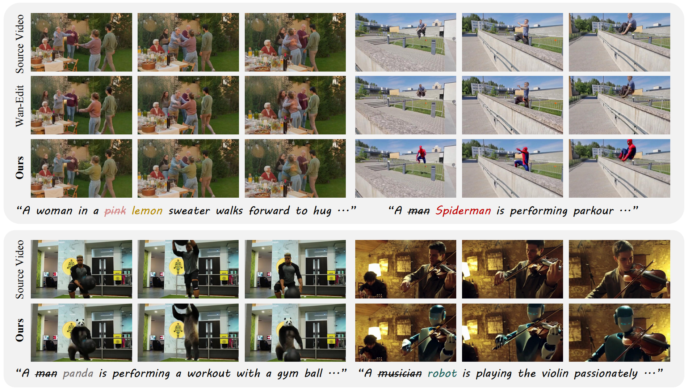
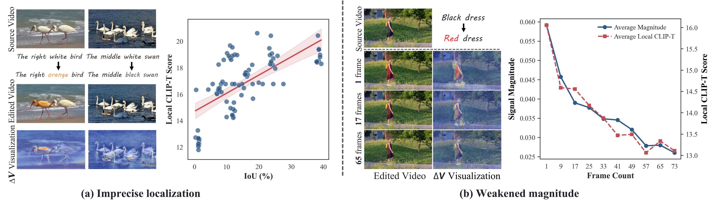
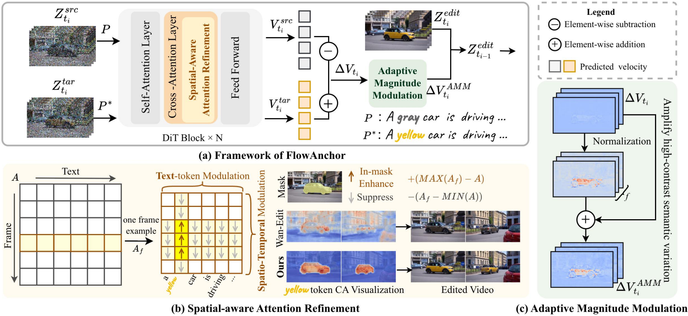

FlowAnchor: Stabilizing the Editing Signal for Inversion-Free Video Editing
Under Review
Ze Chen* 1
Lan Chen* 1
Yuanhang Li1
Qi Mao† 1
1 MIPG, Communication University of China, Beijing, China
* Equal Contribution † Corresponding Author

TL;DR: FlowAnchor stabilizes inversion-free video editing by anchoring where to
edit via Spatial-aware Attention Refinement and how strongly to edit via Adaptive
Magnitude Modulation, producing faithful, temporally coherent edits without training.
[Paper]
[Code]
Problem Statement
While FlowEdit offers an efficient inversion-free framework, its naive application to video leads to
noticeable performance degradation. We investigate this ineffectiveness by qualitatively and quantitatively
analyzing the editing signal ΔV, revealing two factors that contribute to its instability:
imprecise localization and weakened magnitude.

(a) Imprecise Localization: The editing signal leaks to wrong regions or diffuses across
the frame in multi-object scenes. (b) Weakened Magnitude: The signal fades as the number
of frames increases, reducing editing strength.
Method
FlowAnchor introduces two key mechanisms: Spatial-aware Attention Refinement (SAR)
anchors where to edit, and Adaptive Magnitude Modulation (AMM) anchors
how strongly to edit. Together, they stabilize the editing signal throughout the inversion-free
flow-based generation process.

(a) Overview of FlowAnchor with SAR and AMM. (b) Cross-attention modulation at the text-token and
spatio-temporal levels. (c) Editing-signal amplification using a normalized contrast map.
Spatial-aware Attention Refinement
SAR refines cross-attention maps with spatial priors to prevent semantic leakage in multi-object scenes.
It modulates attention at both the text-token and spatio-temporal levels, ensuring the editing signal stays
aligned with the target semantics across frames.
Adaptive Magnitude Modulation
AMM derives a normalized contrast map from the editing signal itself and uses frame-aware scaling to
selectively amplify regions with strong semantic variation. This preserves sufficient editing strength,
especially for longer video sequences.
BibTeX
@article{chen2026flowanchor,
title={FlowAnchor: Stabilizing the Editing Signal for Inversion-Free Video Editing},
author={Chen, Ze and Chen, Lan and Li, Yuanhang and Mao, Qi},
journal={arXiv preprint arXiv:2604.22586},
year={2026}
}
* Updated to the Google Scholar-style arXiv citation format